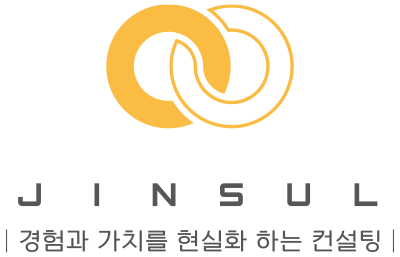

v0.0.5.0

신환 충격파 전략 분석 리포트
데이터 업로드 (드래그/클릭)
신환 수
0
2회차 전환율
0%
3회차 도달율
0%
주사치료 병행 비율
0%
평균 치료 횟수
0.0
충격파 치료일 기준
중간값 치료 횟수
0
충격파 치료일 기준
가장 흔한 치료 횟수(최빈값)
-
7일 내 재방문율
0%
14일 내 재방문율
0%
치료 금액 선택
포함할 치료 금액 (단일 선택)
제외할 치료 금액 (복수 선택)
※ 제외된 금액으로 시작한 신환은 분석에서 제외됩니다.
표 1. 부위별 치료 횟수
표 1-1. 치료사별·부위별 치료 횟수
표 1-2. 치료사별·부위별 치료 비율
표 1-3. Free(기타여부) → 유료 전환 (기타→신환/재진) (전체)
펼치기
표 1-4. Free(기타여부) → 유료 전환 (연령대별)
표 1-5. Free(기타여부) → 유료 전환 (부위별)
표 1-6. Free(기타여부) → 유료 전환 (치료사별)
표 1-7. 치료사별·부위별 3회차 도달율
표 2. 신환 상세 통계 및 재진 전환율
표 3. 연령대별 충격파 치료 건수
표 4. 연령대별 성별 치료 비중
표 5. 충격파 치료 횟수 분포
표 6. 연령대별 치료 횟수 인원 분포
표 6-1. 연령대별 치료 횟수 도달율(누적)
표 7. 치료 금액 구간별 핵심지표
표 8. 치료사별 핵심지표
표 8-1. 충격파 치료사별 신환/재진 예약 비율(O/X)
표 9. 첫 치료 → 2회차 재방문 주기
표 10. 진료실별 핵심지표
표 11. 치료사별·연령대별 평균 치료 횟수
표 12. 치료사별·연령대별 치료 횟수 분포
표 13. 치료사별·연령대별 재방문 안내 연락 시점 및 예약 확인(권장)
펼치기
병원 경영 전략 제안서